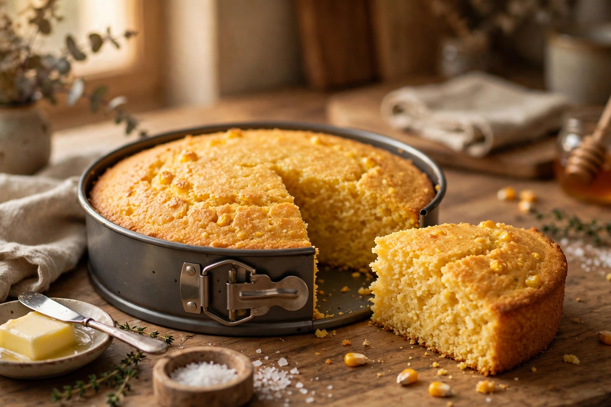
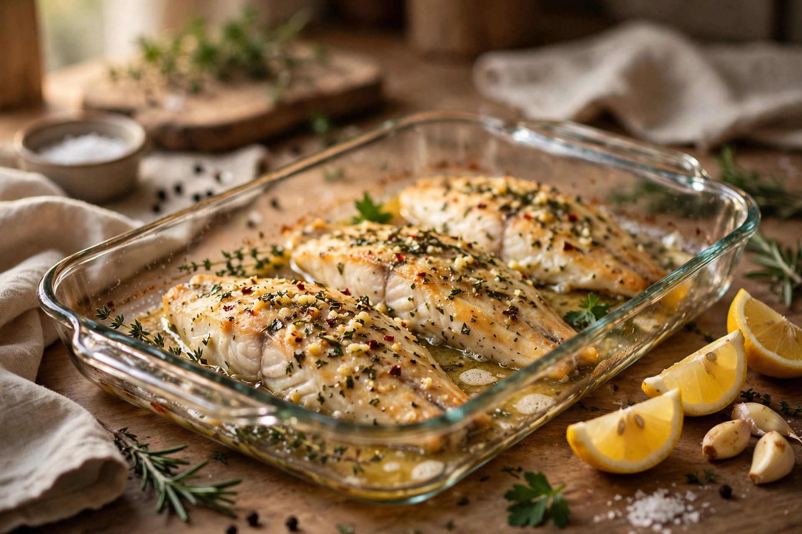
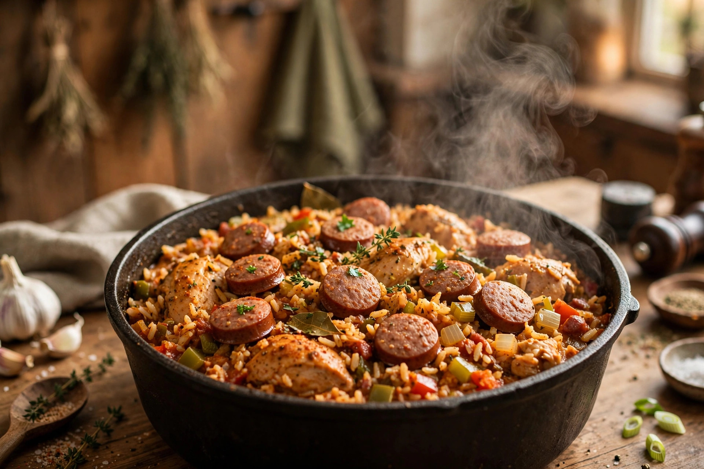
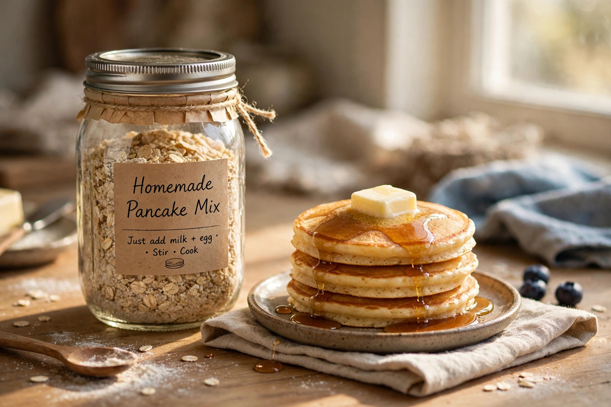
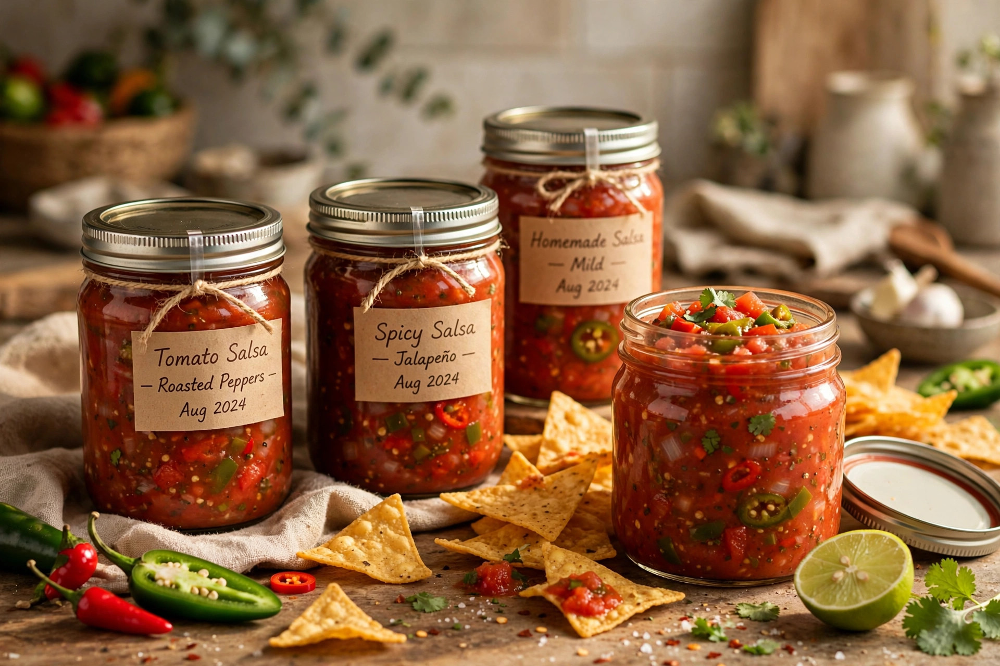

Lemongrass Basil Chicken Stir Fry
Chicken, carrots, broccoli, bok choy and peppers in Kevin's Lemongrass Basil sauce. His own recipe — the wok photo is his.

Cuban Black Beans
Instant Pot black beans: soak overnight, 5–8 minutes at pressure, finish with salt and vinegar or lime.

Ritz Cracker Meatloaf
Beef and Ritz crackers soaked in milk, sautéed peppers and onion, ketchup–sweet chili glaze on twice. Done at 165°F.

Cornbread
Jiffy mix, milk, egg whites, Stevia — pressure cooked in a springform pan. 15 minutes, 10 minutes natural release.

Pesto Fish
Filed as Pesto Fish (rename later). The card itself: baked fish in garlic butter with lemon.

Jambalaya
Zatarain's box, chicken and andouille, browned first, 8 minutes at pressure. His words: super simple.

Pancake Mix
Flour, sugar, baking powder, salt — his dry mix, ready when pancakes are on.

Pancakes
His from-scratch batter: flour, milk, egg, melted butter. Partner to the dry Pancake Mix.

Salsa (Canned)
Shelly's canned salsa (2010): tomatoes, peppers, onion, jalapeños — simmer two hours, jar.

Low Carb Nut Bars
Peanuts, cashews and almonds in a warm peanut-butter mix, frozen and cut. About 4g net carbs a bar.

No-Bake Keto Granola Bars
Almonds and coconut flakes in golden syrup, sugar-free chocolate melted over the top. 3g net carbs a bar.

5-Ingredient Protein Bars (No-Bake)
Five ingredients: peanut butter, maple syrup, whey protein, oats. 14g protein a bar.

Protein Bars (Low Carb & Sugar Free)
Hazelnuts, almond flour, cocoa, collagen — pressed and chilled. Lowest carb in the box: 2.3g net a bar.

Keto Granola Bars with Coconut
The coconut bar he asked for: coconut inside, coconut oil binding, almonds and pumpkin seeds, chocolate drizzle.

Keto Chocolate Protein Bars (Nut Free)
The nut-free bar: sunflower seeds and seed butter, chocolate protein powder, cocoa.